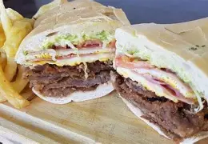

Es una comida que me encanta, a mi (Alejo Thomas Gnus) me encantan los sanguches de mila completos!!!!
Sin más preambulo, comencemos!

Este sera el resultado final que ustedes buscaran...
Conseguir los ingredientes:
Para la milanesa
Pan rallado bueno para sanguche
Una buena milanga de carne u pollo (500g)
Tip: Asegurate que sea grande, y quitarle el exceso de grasa y la telita del costado para evitar deformidades al freir.
Perejil (con o sín)
Leche
1 cucharada de mostaza
Sal y pimienta
Pan rallado
Para la salsa:
Perejil
5-6 aceitunas
Mayonesa
Salmuera de aceitunas
Armado del sanguche:
Pan sanguchero
Lechuga
Tomate
Lomito ahumado (o jamón)
Queso de maquina
Todo en 7 pasos:
Preparar la carne, limpiar la milanesa (cortar la telita del costado y quitar la grasa). Condimentar la carne con sal
En un bowl mezclar los huevos, el ajo picado, leche, perejil picado, mostaza, queso rallado, ralladura de limón, sal y pimienta. Sumergir la carne en la marinada y dejarla en reposo el mayor tiempo posible.
Colocar el pan rallado en una fuente grande y rebozar las milanesas, asegurando que la carne quede bien cubierta
La salsa:
Lavar y secar el perejil y las aceitunas
Coloca las aceitunas junto a su salmuera en una procesadora o licuadora. En esta misma colocar el perejil y la mayonesa.
Triturar hasta que todo quede como una pasta bien picada.
Armado del sandwich:
Picar las verduras, la lechuga en tiras y el tomate en rodajas finas.
Calentar abundante aceite en una sartén grande. Freír las milanesas hasta que estén doradas y crujientes por ambos lados. Escurre en papel absorbente.
Abrir los panes cortándolos por la mitad. Untar el pan con la salsa de mayonesa y aceitunas. Colocar lechuga y tomate, arriba agrega la milanesa, junto con el jamón o lomito, queso de máquina y un huevo frito. Cubrir por arriba con la otra mitad del pan.
Servir inmediatamente para disfrutar de la milanesa caliente y crujiente.